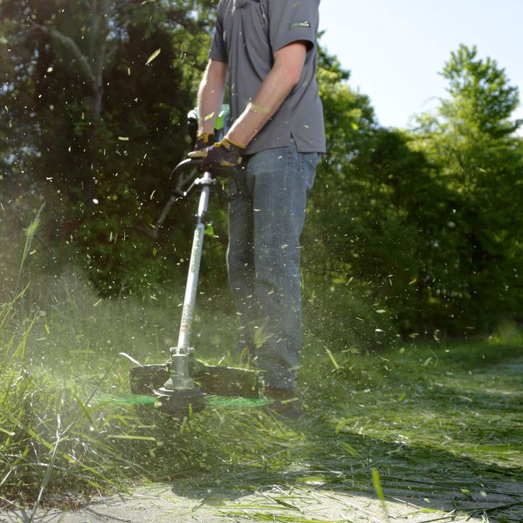
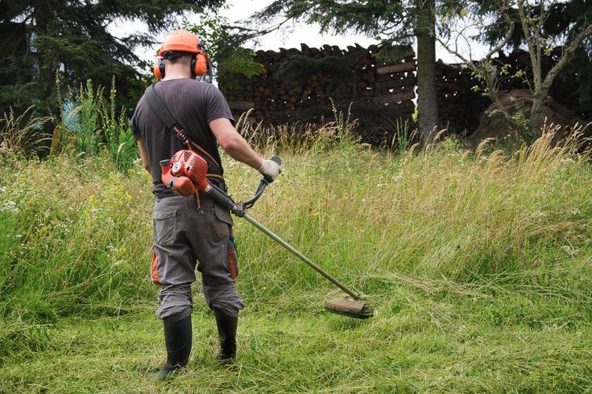
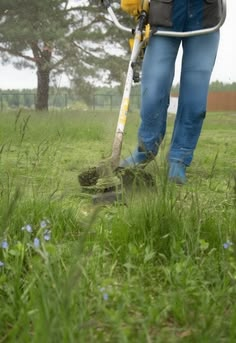

ARTE E FLORES PAISAGISMO
Limpeza e Roçagem
Limpeza de terrenos e áreas externas, mantendo o espaço organizado, limpo e bem cuidado.
🌿 SOLICITAR ORÇAMENTONOSSOS SERVIÇOS
Roçagem e limpeza de áreas externas.
Realizamos a roçagem de terrenos, áreas verdes e espaços externos com vegetação alta ou excessiva, ajudando a manter o ambiente limpo e organizado.
Roçagem de terrenos
Corte da vegetação alta e excessiva para deixar o terreno mais limpo e organizado.
Controle da vegetação
Redução do crescimento excessivo de mato e vegetação em áreas externas.
Corte de mato
Corte da vegetação que cresceu de forma desordenada, deixando o espaço mais cuidado.
Limpeza de áreas verdes
Cuidados em áreas externas que precisam de limpeza e controle da vegetação.
Áreas residenciais
Roçagem de quintais, terrenos e áreas externas de residências.
Áreas comerciais e terrenos
Manutenção de áreas externas, terrenos e espaços que precisam de limpeza da vegetação.
NOSSO TRABALHO NA PRÁTICA
Do mato alto a um espaço limpo.
Confira alguns exemplos de trabalhos de roçagem e limpeza de áreas externas.



Um espaço limpo
faz toda a diferença.
Conte com a Arte e Flores Paisagismo para cuidar da sua área externa.
FALE CONOSCO
Precisa de roçagem?
Selecione os serviços que você precisa e solicite seu orçamento.